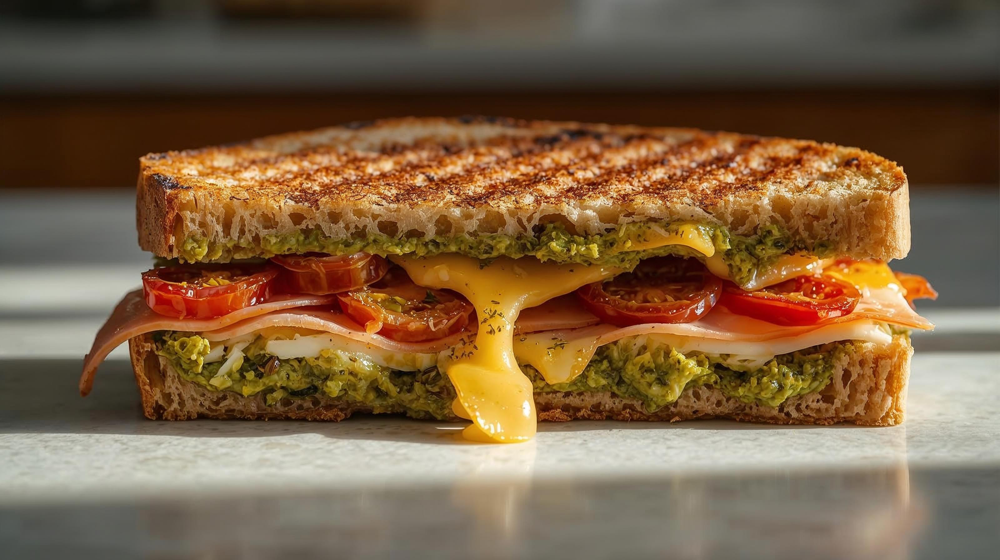

Tostradamus
Fesleğenli pesto sos, özel Antep fıstıklı dana jambon, kaşar peyniri ve kuru domatesin eşsiz uyumu.

Tostınbiber
Beyaz peynir, fermente sucuk, közlenmiş biber ve özel dağ kekiği ile hazırlanan geleneksel lezzet.

Tosytoy
Karamelize soğan, açuka, kaşar peyniri, hindi füme ile doyurucu bir seçenek.